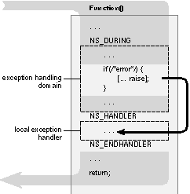
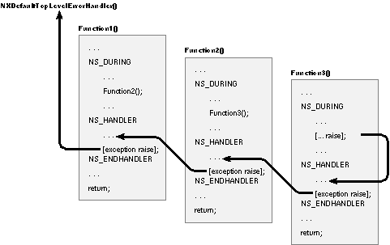

Enterprise Objects Framework Release 1.0 Copyright ©1994 by NeXT Computer, Inc. All Rights Reserved.
| NSException |
| Inherits From: | NSObject | |
| Conforms To: | NSCoding NSCopying NSObject | |
| Declared In: | foundation/NSException.h |
| Class Description |
| An exceptional condition is one that interrupts the normal flow of program execution. Each application can interpret different types of conditions as exceptional. For example, one application might view as exceptional the attempt to save a file in a directory that's write-protected. In this sense, an exceptional condition can be equivalent to an error. Another application might interpret the user's keypress as an exceptional condition: an indication that a long-running process should be aborted.
Raising an Exception Once an exceptional condition is detected, it must be propagated to the routine or routines that will handle it, a process referred to as "raising an exception." In the NeXT exception handling system, exceptions are raised by instantiating an exception object and sending it a raise message. Exception objects provide: |
| a name - a short NSString that is used to uniquely identify the exception | ||
| a reason - a longer NSString that contains a "human-readable" reason for the exception. This reason object is printed when you print an exception object using the "%@" format. | ||
| userInfo - an NSDictionary object that you can use to supply application-specific data to the exception handler. For example, if a function's return value caused the exception to be raised, you could pass the return value to the exception handler through UserInfo. Or, if the exception handler displays a panel in response to the exception, userInfo could contain the text string to be displayed in the panel. |
| Handling an Exception
Sending a raise message to an exception object initiates the propagation of the exception and passes data about it. Where and how the exception is handled depends on where you send the message from. In general, a raise message is sent to an exception object within the domain of an exception handler. An exception handler is a control structure created by the macros NS_DURING, NS_HANDLER, and NS_ENDHANDLER, as shown in the following illustration. |
|  |
| The section of code between NS_DURING and NS_HANDLER is the exception handling domain; the section between NS_HANDLER and NS_ENDHANDLER is the local exception handler. The normal flow of program execution is marked by the gray arrow; the code within the local exception handler is executed only if an exception is raised. Sending a raise message to an exception object causes program control to jump to the first executable line following NS_HANDLER.
Although you can raise an exception directly within the exception handling domain, it is more often called indirectly within one of the procedures called from the domain. No matter how deeply in a call sequence the an exception is raised, execution jumps to the local exception handler (assuming there are no intervening exception handlers, as discussed in the next section). In this way, exceptions raised at a low level can be caught at a high level. Besides transferring execution to the local exception handler, sending a raise message to an exception object initializes the variable "exception" (of type NSException *), as defined in NSException.h. This variable is defined only within the local exception handler and holds the raised exception object. Raising another exception is one way for program execution to leave the exception-handling domain; three other ways are permitted: |
| "Falling off the end" | ||
| Calling NS_VALRETURN() | ||
| Calling NS_VOIDRETURN |
| Note: A simple return from the exception-handling domain is not permitted.
"Falling off the end" is simply the normal execution pathway introduced above. After all appropriate statements within the domain are executed (and no exception is raised), execution continues on the line following NS_ENDHANDLER. Alternatively, you can return control to the caller from within the domain by calling NS_VALRETURN() or NS_VOIDRETURN, depending on whether you need to return a value. You can't use goto or return() to exit an exception handling domain--errors will result. Nor can you use setjmp() and longjmp() if the jump entails crossing an NS_DURING statement. Since in many cases you won't know if the NEXTSTEP code that your program calls has exception handling domains within it, it's generally not recommended that you use setjmp() and longjmp() in your application. If an exception is raised and execution begins within the local exception handler, it either continues until all appropriate statements are executed (falling off the end of the local exception handler), or the exception is raised again to invoke the services of an encompassing exception handler, as described in the next section.
Nested Exception Handlers Exception handlers can be nested so that an exception raised in an inner domain can be treated by the local exception handler and any number of encompassing exception handlers. The following diagram illustrates the use of nested exception handlers, and is discussed in the text that follows. |
|  |
| An exception raised within Function3's domain causes execution to jump to its local exception handler. In a typical application, this exception handler checks the local variable "exception" (of type NSException *, as defined in NSException.h) to determine the nature of the exception. For exception types that it recognizes, the local handler responds and then sends a raise message to the local exception object to pass notification of the exception to the handler above it (in this case, the handler in Function2). Function2's exception handler does the same and then re-raises the exception to Function1's handler. Finally, Function1's handler re-raises the exception. Since there's no exception handling domain above Function1, the exception is transferred to the default top-level error handler.
An exception that's re-raised appears to the next higher handler just as if the initial exception had been raised within its own exception handling domain. For applications based on the Application Kit, exceptions that are re-raised within the highest-level local exception handler are sent to NXDefaultTopLevelErrorHandler(), which prints a message about the exception. If an application's connection to the Window Server becomes corrupt or dies, or if the application is unable to form a connection to the Server, NXDefaultTopLevelErrorHandler() terminates the application by calling exit() with a status code of -1. NXSetTopLevelErrorHandler() lets you change the function used as the top-level handler; NXTopLevelErrorHandler() returns a pointer to the current top-level handler. If you substitute your own function for NXDefaultTopLevelErrorHandler(), you should probably call NXDefaultTopLevelErrorHandler() as part of its implementation. In this way, your function can give special handling to certain exceptions, passing all others to NXDefaultTopLevelErrorHandler().
Raising an Exception Outside of an Exception Handler If an exception is raised outside of any exception handler, it's intercepted by the uncaught exception handler, a function set by NSSetUncaughtExceptionHandler() and returned by NSGetUncaughtExceptionHandler(). The default uncaught exception handler for Application Kit programs writes the message "An uncaught exception was raised" to the Workspace Manager's console window (if the application was launched by the Workspace Manager) or to a Shell or Terminal window (if the application was launched from either of those applications). It then calls the top-level exception handler, passing it the NSException object that originally received the raise message. You can change the way uncaught exceptions are handled by using NSSetUncaughtExceptionHandler() to establish a different procedure as the handler. However, because of the design of the Application Kit, it's rare for an exception to be raised outside of an exception handling domain. The Application object's event loop itself is within an exception handling domain. On each cycle of the loop, the Application object retrieves an event and sends an event message to the appropriate object in the application. Thus, the code you write for custom objects (as well as the code for Application Kit objects) is executed within the context of the event loop's exception handler. To customize the Application Kit's highest-level response to exceptions, modify the top-level exception handler.
Predefined Exceptions NEXTSTEP predefines a number of exception names. These exceptions are defined in NSException.h; for example: |
 extern NSString *NSGenericException;
extern NSString *NSGenericException;
 extern NSString *NSRangeException;
extern NSString *NSRangeException;
 extern NSString *NSInvalidArgumentException;
extern NSString *NSInvalidArgumentException;
| You can catch any of these exceptions from within your exception handler by comparing the exception's name with these predefined exception names. |
| Instance Variables |
| None declared in this class. |
| Adopted Protocols |
| NSCoding | ||
| NSCopying | ||
| NSObject |
| Method Types |
| Creating and Raising Exceptions | + exceptionWithName: |
| + raise:format: + raise:format:arguments: - initWithName:reason:userInfo: - raise |
| Querying Exceptions | - exceptionName |
| - exceptionReason - exceptionUserInfo |
| Class Methods |
| exceptionWithName:reason:userInfo: |
| + (NSException *)exceptionWithName:(NSString *)name |
| reason:(NSString *)reason userInfo:(NSDictionary *)userInfo |
| Creates an autoreleased exception object using a predefined name, a human-readable reason, and arbitrary userInfo.
raise:format: |
| + (volatile void)raise:(NSString *)name format:(NSString *)format,... |
| A convenience method that creates and raises an exception with name name and a reason constructed from format and the arguments that follow in the manner of printf(). The user-defined information is nil.
raise:format:arguments: |
| + (volatile void)raise:(NSString *)name format:(NSString *)format arguments:(va_list)argList |
| Creates and raises an exception with name name and a reason constructed from format and the arguments in argList, in the manner of vprintf(). The user-defined information is nil. |
| Instance Methods |
| exceptionName |
| Returns the short NSString that is used to uniquely identify the exception.
See also: exceptionWithName:reason:userInfo:
exceptionReason |
| Returns the longer NSString that contains a "human-readable" reason for the exception.
See also: exceptionWithName:reason:userInfo:
exceptionUserInfo |
| Returns an NSDictionary object that contains application-specific data for the exception. Returns nil if no application-specific data exists for the exception. As an example, if a function's return value caused the exception to be raised, the return value might be passed to the exception handler through UserInfo. Or, if the exception handler is to display a panel in response to the exception, userInfo might contain the text string to be displayed in the panel.
See also: exceptionWithName:reason:userInfo:
initWithName:reason:userInfo: |
| Initializes a newly allocated exception object using the predefined name, human-readable reason, and user-defined userInfo. This is the designated initializer.
raise |
| Raises the exception, causing program flow to jump to the enclosing error handler.
Note: All methods that raise use this method, so this is the place to set a breakpoint if you are monitoring exceptions in the debugger. |